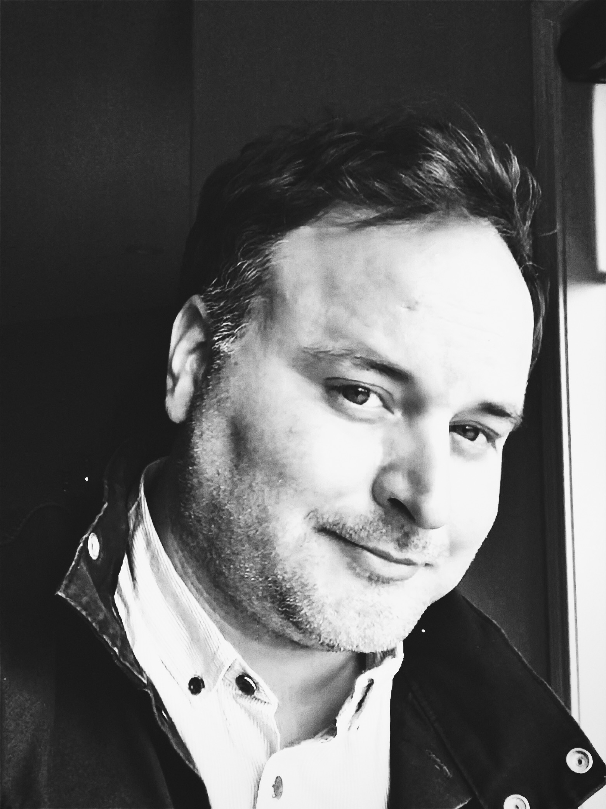

{{site.data.site.bio_description}}
Education:
- 2018: Resident Editor at Canadian Film Centre: Cineplex Film Program, Toronto, Ontario
- 2006: Graduate Certificate: Advanced Television and Film, Sheridan College, Oakville, Ontario
- 2004: Bachelor of Fine Arts: Media Arts and Digital Technology, Alberta University of the Arts, Calgary, Alberta
Accomplishments
{{ site.data.site.bio_accomplishments}}